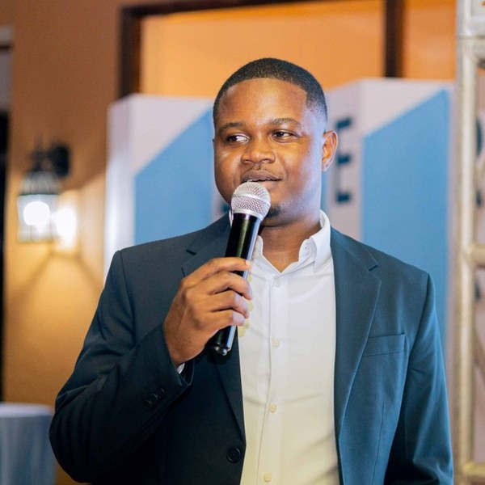
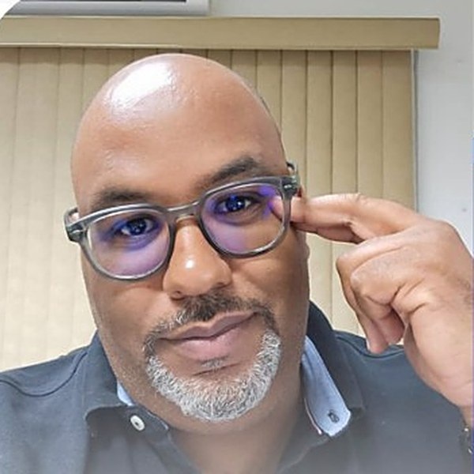
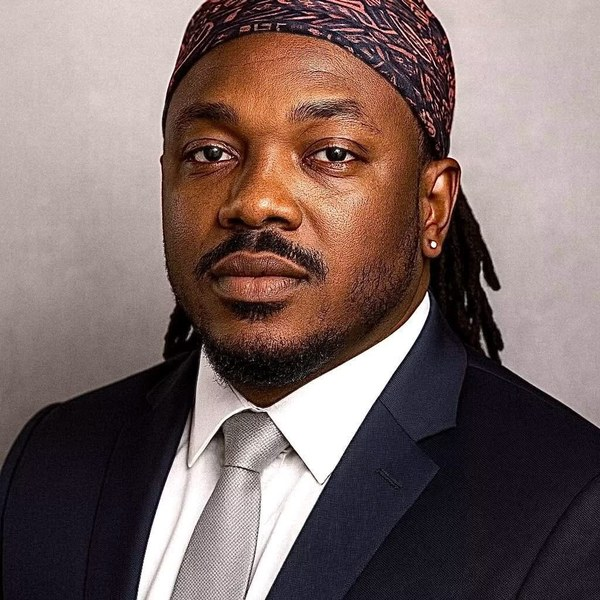

Woodmy Jean-Baptiste
Entrepreneur · Co-fondateur & PDG de Zero Loss Consulting



Entrepreneur haïtien dans la logistique, la construction et le commerce, il fonde en 2017 Pinacle Trucks & Solutions, qui compte aujourd’hui 32 employés au service des secteurs humanitaire, privé et public. Ancien Regional Sales Director à la BRANA, il a tenu bon face à l’insécurité pour préserver les emplois. Pour lui, réussir, c’est aussi construire une vie équilibrée et garder sa liberté.